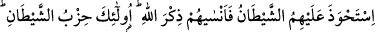
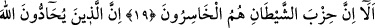
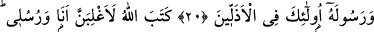
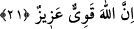

ŞEYTANIN YANDAŞLARI
HEP KAYIPTADIRLAR
19. Şeytan onları etkisi altına aldı da kendilerine Allah’ı anmayı unutturdu. İşte
onlar şeytanın yandaşlarıdır. İyi bilin ki şeytanın yandaşları hep kayıptadırlar.
20. Allah’a ve Peygamberine düşman olanlar, işte onlar en aşağıların
arasındadırlar.
21. Allah: Elbette ben ve elçilerim galip geleceğiz, diye yazmıştır. Şüphesiz Allah
güçlüdür, galiptir.
“Şeytan onları etkisi altına aldı” yâni şeytan onlara üstün geldi ve onlara sâhib oldu.
Çünkü onlar, şeytanın istediği her konuda ona uymaktadırlar. Öyle ki, şeytan onları
kendi taraftarları arasına ve yönetimi altına almıştır. “İstahveze” fiili aslı üzerine,
istenveka ve istasvebe fiilleri gibi kıyas hilafına gelmiştir. Kıyasa göre istehâze
tarzında gelmesi gerekirdi. Dolayısıyla kelime, kullanılış bakımından fasih ve edebî,
kıyas bakımından ise şaz yâni kurala aykırı olarak gelmiştir. Nakledildiğine göre, Hz.
Ömer (r.a.) bu fiili istehâze şeklinde okumuştur.
“Kendilerine Allah’ı anmayı unutturdu.” Burada masdar mefulüne muzaf kılınmıştır.
Yâni şeytan onlara Allah’ı unutturmuş, bundan dolayı onlara baskın gelmiştir. Bu
sebeple de onlar, Allah Teâlâ’yı kalpleriyle de dilleriyle de zikretmemektedirler.
“İşte onlar” yâni yukarıda zikredilen kötülüklerle nitelenen münâfıklar “şeytanın
yandaşlarıdır.” Yâni onun emrettiklerini yapan yandaşları ve arkadaşlarıdır. Âyette
geçen hizb kelimesi, aynı görüşteki insanların bir bölümünü içine alan bir mezheb ve
ekoldür.
“İyi bilin ki şeytanın yandaşları hep kayıptadırlar.” Yâni kendileri için ebedî nimeti
kaçırıp karşılığında acı verici azâbı aldıkları için daha ötesi olmayan son derece ziyan
ve zarara uğramış olmakla sıfatlanmışlardır.
Allah Teâlâ’nın makamlarını yükselttiği bazı meşâyıh şöyle demişlerdir: Bir kulu
şeytanın etkisi altına almış olmasının belirtisi; yiyecek ve giyeceklerini düzeltmek ve
süslemekle kalbini Allah’ın kendisine verdiği nimetleri düşünmekten, şükrünü îfâ
etmekten engellemesidir. Yine ona gıybet, iftirâ, boş söz ve yalan söyleterek Rabbini